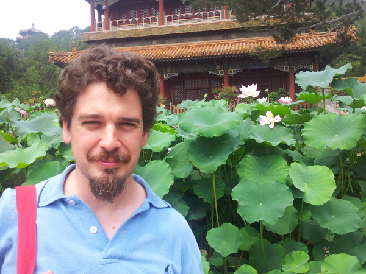

Home
|  | Contact information: afm AT CS DOT CMU DOT EDU Unbabel Rua Visconde de Santarém, 67-B 1000-286 Lisboa - Portugal Phone: +351 308 805 425 |
I am a Research Scientist at Unbabel in Lisbon, Portugal. I work on natural language processing and machine learning. I am an invited professor at Instituto Superior Técnico, a researcher at the Instituto de Telecomunicações, and I do scientific consulting for Priberam Labs.
Until 2012, I was a PhD student in the joint CMU-Portugal program in Language Technologies, at Carnegie Mellon University and Instituto Superior Técnico. My advisors were Mário Figueiredo, Noah Smith, Pedro Aguiar and Eric Xing.
Post-docs
- Vlad Niculae (Post-doc at IT, 2018-)
- Erick Fonseca (Post-doc at IT, 2018-)
Students and Interns
- Tsvetomila Mihaylova (PhD at IST, 2018-)
- Ben Peters (PhD at IST, 2018-)
- Gonçalo Correia (PhD at IST, 2018-)
- Pedro Martins (PhD at IST, 2018-)
- Sameen Maruf (PhD at Monash University, 2016-: co-advised with Reza Haffari)
- Zita Marinho (PhD at CMU/IST, 2013-; co-advised with Geoff Gordon and Sidd Srinivasa)
- Pedro Ferreira (MSc at IST, 2017-)
- Chaitanya Malaviya (Research Intern at Unbabel, 2017, now MSc at CMU)
- Julia Kreutzer (Research Intern at Unbabel, 2016, now PhD student at Heidelberg University)
- Daniel Ferreira (MSc at IST, 2015; co-advised with Mariana Almeida; now PhD at Vienna Technical University)
- Renato Negrinho (Research Intern at Priberam, 2014, now PhD at CMU)
- Vasco Marcelino (MSc at IST, 2014; co-advised with Miguel Almeida)
- Marta Quintão (MSc at IST, 2014)
- Pedro Ramos (MSc at IST, 2013)
News
- We have a new EMNLP paper where we propose SparseMAP to build dynamic computation graphs via sparse latent structure. Keep posted!
- I gave an invited talk in the ACL 2018 Workshop on Neural Machine Translation and Generation. Here are the slides.
- I am co-organizing LxMLS 2018 (Lisbon Machine Learning School). See here for details!
- We have a new ICML paper where we propose SparseMAP as a new inference procedure for sparse structured prediction (work done in collaboration with Vlad Niculae, Mathieu Blondel, and Claire Cardie).
- We have a new ACL short paper where we use new forms of sparse and constrained attention within neural machine translation (work done in collaboration with Chaitanya Malaviya and Pedro Ferreira).
- Great news: I got an ERC (European Research Council) Starting Grant on "Deep Structured Prediction in Natural Language Processing (DeepSPIN)". I am now looking for Post-Doc and PhD Students.
- I'm giving an invited talk in the EMNLP 2017 Workshop on Structured Prediction for NLP.
- I gave an invited talk in the ICML 2017 Workshop on Learning to Generate Natural Language and co-organized the ICML 2017 Workshop on Deep Structured Prediction.
- Our paper on end-to-end differentiable neural-easy first decoders made it to EMNLP 2017!
- We have a new TACL paper where we further improve our quality estimation system by using automatic post-editing as a auxiliary task.
- Our word-level quality estimation system achieved the top score in the First Conference on Machine Translation (WMT 2016). Check the paper here.
- Our paper on sparsemax was accepted at ICML 2016. It's a sparse, differentiable, alternative to the softmax activation.
- I joined Unbabel! We do AI powered human quality translation.
- I presented a tutorial on "Linear Programming Decoders in NLP" at EMNLP 2014, which covers integer linear programming, message-passing algorithms, and dual decomposition. The slides are available here and the videos here (part 1, part 2).
- Our TurboSemanticParser system achieved the top score in the open track of the SemEval 2014 task on "Broad-Coverage Semantic Dependency Parsing." Check the paper here.
- I presented a tutorial on "Structured Sparsity in NLP" at EACL 2014. The slides are available here (see here for an older version of the same tutorial presented at NAACL 2012).
- I received the Portuguese IBM Scientific Prize for my work in structured prediction and "Turbo Parsing."
- I successfully defended my thesis in May 11, 2012, at CMU!